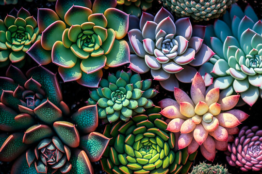

About Me
I completed my BSc Agric degree many moons ago, and sadly, my career path has since steered me away from this passion. However, living in a farming community, I was inspired to build a greenhouse while balancing the demands of parenthood and working part-time.
Initially, the greenhouse was a hobby to keep my green fingers busy, but this slowly developed into a small business. This venture not only keeps me engaged with my love for horticulture but also supplements our family income, allowing me to contribute financially while doing what I enjoy most.
Why Grow Succulents?
I love succulents and there are many reasons why growing succulents in South Africa is highly appealing:
- Low Maintenance: Succulents require minimal care, making them ideal for busy individuals or those new to gardening.
- Durability: These plants are highly resilient and can thrive in South Africa's diverse and often harsh climatic conditions, from arid deserts to coastal regions.
- Versatility: Succulents can be grown in various settings, including gardens, pots, and even indoors.
- Cost-Effective: Succulents are relatively inexpensive, offering an affordable way to enhance any space.
- Indigenous Options: South Africa boasts a wide range of indigenous succulent species, providing gardeners with a rich variety of shapes, colors, and textures.
- Aesthetic Beauty: Succulents add visual appeal to any landscape with their unique forms and vibrant colors.
- Wildlife Resistant: Most succulents are not edible to South African wildlife, making them a practical choice for gardens in areas with abundant wildlife.
